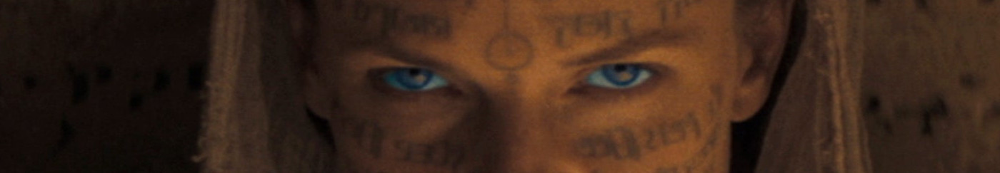
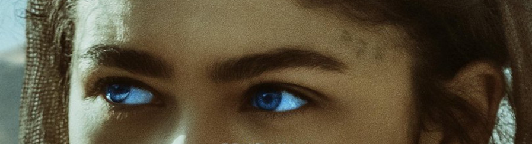

Caladan
Caladan era o feudo da Casa Atreides . Foi o local de nascimento do duque Leto Atreides I , Paul Atreides e da maioria dos ancestrais de Paul que haviam sido chefes da Casa Atreides e governantes do planeta. A residência tradicional dos Atreides era o Castelo Caladan . Em 10191 AG House Atreides foi condenado a renunciar ao feudo de Caladan, que tinha sido o lar da família por mais de 10.000 anos. Em vez disso, eles deveriam assumir o controle do feudo de Arrakis , que anteriormente era administrado pela Casa Harkonnen , o antigo inimigo Atreides. Depois que os Atreides se mudaram para Arrakis, o conde Hasimir Fenring foi nomeado Siridar-Ausência de Caladan.
Arrakis
Arrakis , também conhecido como " Duna ", e mais tarde " Rakis ", é um planeta árido e deserto localizado na extremidade do Antigo Império no sistema estelar Canopus . Mais tarde, tornou-se o centro do Império sob o império do Muad'Dib . Foi a fonte original e por muito tempo a única fonte da Spice Melange , vital para viagens espaciais . A superfície de Arrakis consistia quase exclusivamente em desertos de dunas secas, daí o nome alternativo do planeta, Duna . Várias cadeias de montanhas desgastadas se estendiam por todo o planeta, dividindo os desertos e abrigando as formas de vida nativas limitadas. Afloramentos rochosos também cobriram a superfície do planeta.
Salusa Secundus
Salusa Secundus foi o terceiro planeta no sistema estelar Gamma Waiping , e o mundo natal designado da Casa Corrino durante sua história inicial, embora mais tarde tenha se tornado um planeta prisão após a migração da corte real para o planeta paradisíaco Kaitain. Um lugar agreste, com muitos animais selvagens, temperaturas extremas e terreno difícil. Foi conhecido por ser um dos únicos dois planetas no Universo onde o shigawire poderia crescer. Devido à aspereza de Salusa Secundus, tornou-se o planeta prisão de Corrino. Aqueles que infringiram a lei imperial e foram julgados culpados foram condenados à prisão no planeta. Muitos no império suspeitavam que a dureza deste mundo era responsável pela criação de tropas Sardaukar . Esta foi uma teoria fortemente mantida pelos generais Atreides , ou seja, que o ambiente hostil do planeta foi responsável pelo desenvolvimento de um povo feroz e endurecido. Esta teoria foi ainda mais reforçada pela descoberta pelos Atreides da resistência e habilidades de luta dos Fremen em Arrakis .
Lady Jessica
Lady Jéssica Atreides, Lady Jéssica ou apenas Jéssica, foi uma Reverenda Madre da Irmandade Bene Gesserit. Ela também foi a concubina oficial do Duque Leto Atreides I, com quem teve dois filhos: o Imperador Paul Atreides e a Regente Alia Atreides. Como resultado do programa de reprodução das Bene Gesserit, Lady Jéssica era filha do Barão Vladimir Harkonnen e de uma mãe desconhecida. Sendo a informação dos pais de Jéssica secreta, constava nos arquivos das Bene Gesserit que sua mãe se chamava Tenidia Nerus. Visto que o Barão Vladimir Harkonnen era inimigo declarado do Duque Leto Atreides I, Lady Jéssica nunca foi chamada de Jéssica Harkonnen. Antes de se tornar concubina era conhecida como Jéssica Nerus, e ao se tornar concubina passou a ser chamada de Lady Jéssica Atreides.
Chani Kynes
Chani Kynes, também conhecida como Sihaya pelos íntimos, foi a concubina Fremen do imperador Paul Atreides, e mãe de seus 2 filhos: Ghanima Atreides e Leto Atreides II. Era filha do planetólogo do Imperium Liet Kynes e de uma mãe Fremen. Chani era uma mulher jovem e de pele escura. Era muito magra e possuía um rosto de fada. Seus olhos eram grandes e totalmente azuis como covas negras, sem nenhum branco neles devido ao uso excessivo de mélange. Possuía longos cabelos ruivo-acastanhados.